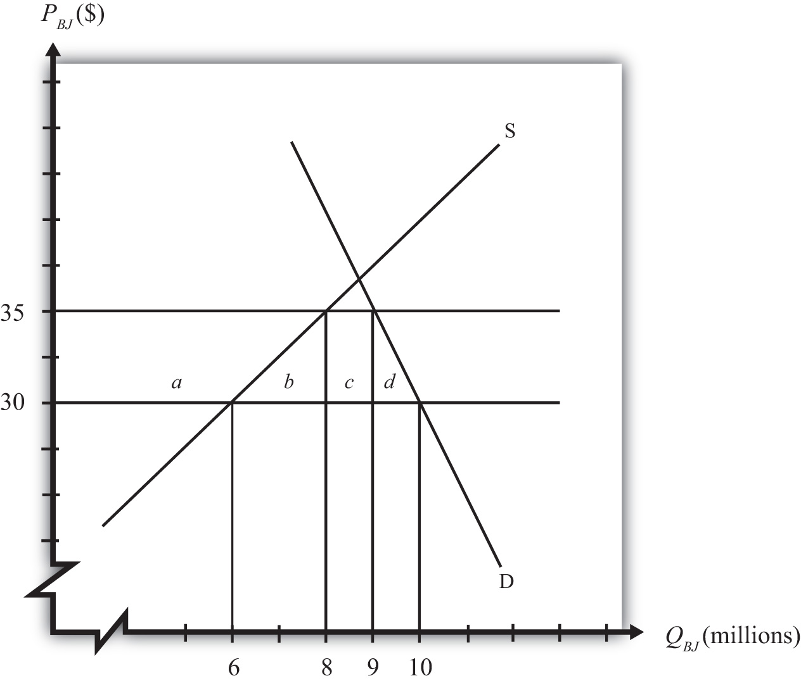

Consider the market for blue jeans in a small importing country, depicted in Figure 10.1 "A Market for Blue Jeans". Suppose a sudden increase in the world supply of jeans causes the world market price to fall from $35 to $30. The price decrease causes an increase in domestic demand from nine to ten million pairs of jeans, a decrease in domestic supply from eight to six million pairs, and an increase in imports from one to four million.
Figure 10.1 A Market for Blue Jeans
Because of these market changes, suppose that the import-competing industry uses its trade union to organize a petition to the government for temporary protection. Let’s imagine that the industry calls for a $5 tariff so as to reverse the effects of the import surge. Note that this type of action is allowable to World Trade Organization (WTO) member countries under the “escape clause” or “safeguards clause.”
We can use the measures of producer surplus and consumer surplus to calculate the effects of a $5 tariff. These effects are summarized in Table 10.1 "Welfare Effects of an Import Tariff". The dollar values are calculated from the respective areas on the graph in Figure 10.1 "A Market for Blue Jeans".
Table 10.1 Welfare Effects of an Import Tariff
| Area on Graph | $ Value | |
|---|---|---|
| Consumer Surplus | − (a + b + c + d) | − $47.5 million |
| Producer Surplus | + a | + $35 million |
| Govt. Revenue | + c | + $5 million |
| National Welfare | − (b + d) | − $7.5 million |
Notice that consumers lose more than the gains that accrue to the domestic producers and the government combined. This is why national welfare is shown to decrease by $7.5 million.
In order to assess the political ramifications of this potential policy, we will make some additional assumptions. In most markets, the number of individuals that makes up the demand side of the market is much larger than the number of firms that makes up the domestic import-competing industry. Suppose, then, that the consumers in this market are made up of millions of individual households, each of which purchases, at most, one pair of jeans. Suppose the domestic blue jeans industry is made up of thirty-five separate firms.
Suppose the supply and demand curves for bottles of Coke are given by,
S = 10P – 7 D = 13 – 5Pwhere P is the price of Coke per bottle, D is the quantity of Coke demand (in millions of bottles), and S is the quantity of Coke supply (in millions of bottles). Suppose the free trade price of Coke is $1.00 and that a tariff of $0.20 is being considered by the government. If the country is a small importer calculate the following: